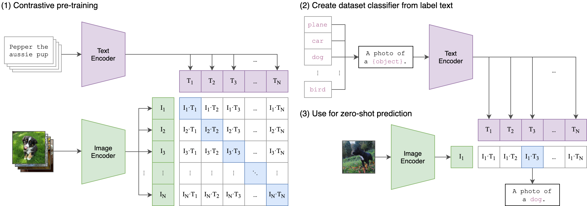

多模态预训练模型
多模态预训练模型（Multimodal Pre-trained Models）是指能够同时处理和理解多种数据模态（如文本、图像、音频等）的深度学习模型。与传统的单模态模型不同，这些模型通过大规模预训练学习不同模态之间的关联和对应关系。
多模态学习的核心优势
- 信息互补：不同模态可以提供互补信息（如图像提供视觉信息，文本提供语义信息）
- 鲁棒性增强：当一种模态数据缺失或质量差时，其他模态可以提供支持
- 应用场景扩展：支持更丰富的跨模态任务（如图文检索、图像描述生成等）
CLIP：图文对比学习的里程碑
基本概念
CLIP（Contrastive Language-Image Pre-training）是 OpenAI 于 2021 年提出的多模态模型，通过对比学习的方式建立图像和文本之间的关联。
CLIP 包含两个核心组件：
- 图像编码器（Image Encoder）：将图像转换为特征向量（如使用 Vision Transformer 或 ResNet）。
- 文本编码器（Text Encoder）：将文本描述转换为特征向量（如使用 Transformer）。
工作流程：
- 输入：
- 图像和文本对（如狗的照片 + 描述 "a photo of a dog"）。
- 编码：
- 图像编码器提取图像特征，文本编码器提取文本特征。
- 对比学习：
- 计算所有图像-文本对的相似度矩阵，通过损失函数（如 InfoNCE）优化模型，使匹配对的特征靠近，非匹配对远离。
两者输出的特征向量会被映射到同一语义空间，通过对比学习对齐图像和文本的表示。

图中关键部分说明
表格部分：对比学习矩阵
表格展示了图像-文本对的相似度计算（假设有 N 个文本和 4 个图像）：
- 行（图像）：
I1, I2, I3, I4表示不同的图像特征。 - 列（文本）：
T1, T2, ..., TN表示不同的文本特征。 - 单元格值（如
I1-T1）：图像I1和文本T1的特征向量余弦相似度。
目标：
最大化对角线上的相似度（正确配对，如 I1-T1），最小化非对角线相似度（错误配对，如 I1-T2）。这是对比学习的核心思想。
示例部分
- 图像示例：
- "Pepper the aussie pup"（一只澳大利亚牧羊犬的照片）。
- "Planer car dog"（可能是噪声或错误标注，实际应为 "A photo of a (object)" 的模板文本）。
- 文本模板：
- "A photo of a (object)" 是 CLIP 预训练时常用的文本提示模板，用于泛化不同类别（如 "a photo of a dog"）。
模型架构
- 双编码器结构：
- 图像编码器：常用 Vision Transformer (ViT) 或 ResNet
- 文本编码器：基于 Transformer 架构
- 对比学习目标：
- 正样本对（匹配的图文对）在特征空间中靠近
- 负样本对（不匹配的图文对）在特征空间中远离
训练过程
实例
# 伪代码展示 CLIP 的核心训练逻辑
image_features = image_encoder(image_batch) # 图像特征提取
text_features = text_encoder(text_batch) # 文本特征提取
# 计算相似度矩阵
logits = torch.matmul(image_features, text_features.T) * temperature
labels = torch.arange(batch_size) # 对角线是正样本
# 对称对比损失
loss_img = cross_entropy(logits, labels)
loss_txt = cross_entropy(logits.T, labels)
total_loss = (loss_img + loss_txt)/2
image_features = image_encoder(image_batch) # 图像特征提取
text_features = text_encoder(text_batch) # 文本特征提取
# 计算相似度矩阵
logits = torch.matmul(image_features, text_features.T) * temperature
labels = torch.arange(batch_size) # 对角线是正样本
# 对称对比损失
loss_img = cross_entropy(logits, labels)
loss_txt = cross_entropy(logits.T, labels)
total_loss = (loss_img + loss_txt)/2
应用场景
- 零样本图像分类：无需微调即可对新类别进行分类
- 图文检索：实现文本到图像或图像到文本的高效搜索
- 内容审核：识别不符合文本描述的图像内容
DALL-E：文本到图像的生成魔法
基本概念
DALL-E 是 OpenAI 开发的文本到图像生成模型，能够根据自然语言描述生成高质量的图像。
技术特点
两阶段训练：
- 第一阶段：离散变分自编码器（dVAE）将图像压缩为视觉词元
- 第二阶段：自回归 Transformer 学习文本到视觉词元的映射
关键创新：
- 将图像生成视为序列预测问题
- 使用 12-billion 参数的 Transformer 模型
生成过程示例
实例
# 伪代码展示 DALL-E 的生成流程
text = "一个穿着宇航服的柴犬在太空站玩电子游戏"
text_tokens = tokenizer(text) # 文本编码
image_tokens = transformer.generate(text_tokens) # 生成视觉词元
image = dvae.decode(image_tokens) # 解码为图像
text = "一个穿着宇航服的柴犬在太空站玩电子游戏"
text_tokens = tokenizer(text) # 文本编码
image_tokens = transformer.generate(text_tokens) # 生成视觉词元
image = dvae.decode(image_tokens) # 解码为图像
模型演进
| 版本 | 主要改进 | 生成能力 |
|---|---|---|
| DALL-E 1 | 基础架构 | 256x256 分辨率 |
| DALL-E 2 | 扩散模型 | 1024x1024 分辨率，更精准 |
| DALL-E 3 | 与 ChatGPT 集成 | 更复杂的提示理解 |
其他重要多模态模型
ALIGN（Google）
- 使用噪声较大的网络数据进行训练
- 证明了大规模弱监督数据的有效性
Flamingo（DeepMind）
- 处理交错的多模态序列（如图文交替）
- 支持少样本学习
BEiT-3（Microsoft）
- 统一的多模态预训练框架
- 在图像、文本和视觉语言任务上都表现优异
多模态模型的应用挑战
- 数据需求：需要海量的高质量多模态对齐数据
- 计算成本：训练这些模型需要巨大的计算资源
- 评估困难：缺乏统一的多模态任务评估标准
- 偏见问题：可能放大训练数据中的社会偏见
实践练习：使用 CLIP 进行零样本分类
实例
import clip
import torch
from PIL import Image
# 加载模型和预处理
device = "cuda" if torch.cuda.is_available() else "cpu"
model, preprocess = clip.load("ViT-B/32", device=device)
# 准备输入
image = preprocess(Image.open("dog.jpg")).unsqueeze(0).to(device)
text_inputs = clip.tokenize(["a dog", "a cat", "a bird"]).to(device)
# 计算特征
with torch.no_grad():
image_features = model.encode_image(image)
text_features = model.encode_text(text_inputs)
# 计算相似度
logits = (image_features @ text_features.T).softmax(dim=-1)
print("预测概率:", logits.cpu().numpy())
import torch
from PIL import Image
# 加载模型和预处理
device = "cuda" if torch.cuda.is_available() else "cpu"
model, preprocess = clip.load("ViT-B/32", device=device)
# 准备输入
image = preprocess(Image.open("dog.jpg")).unsqueeze(0).to(device)
text_inputs = clip.tokenize(["a dog", "a cat", "a bird"]).to(device)
# 计算特征
with torch.no_grad():
image_features = model.encode_image(image)
text_features = model.encode_text(text_inputs)
# 计算相似度
logits = (image_features @ text_features.T).softmax(dim=-1)
print("预测概率:", logits.cpu().numpy())
未来发展方向
- 更高效的架构：降低计算成本，提高推理速度
- 更多模态融合：加入音频、视频等更多模态
- 因果理解能力：增强模型对多模态内容的深层理解
- 可控生成：提高生成内容的精确控制和可编辑性
多模态预训练模型正在重塑人机交互的方式，从 CLIP 的跨模态理解到 DALL-E 的创造性生成，这些技术为 AI 应用开辟了全新的可能性。

点我分享笔记